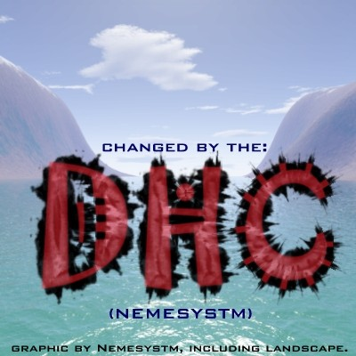

Prometheus A.K.A. Chronoss: if you read this, or if anyone knows where I can reach him, mail me at: dhcorp1@hotmail.com thanks a bunch.
Whoops. Seeing that Phreak.nl requests anyone who changes a site to put the message below up, I will, even if this isn't Belgium. Enough Belgians will see this.
Save us from RedAttack!!!
RedAttack must be stopped.
Why?
Well, RedAttack does his selfpromoting at the cost of the good name of all hackers.
He has no binding or friends in the hackers world at all, but he makes statements about it without knowledge.
Also he wants interference of the authorities for a field which is still free.
He creates panic and even fear in our society, that is absolute unnessecary!
His technical skills are so low, he did'nt get any further than photoshop.
If he goes on like this,and profiles himself as a real hacker, he'll destroy more than he ever will be able to solve.
RedAttack needs to get into the social-society aspects of information security, before he even can dream about being a guru. In the USA he would be imprisoned for a long time,our hopes are on the Belgium authorities to do tha very same thing.
The world is not waiting for another mediaclown!
RedAttack HAS to quit, or else #phreak.nl & #Hit2000 will help him do so!
If you want to join us; place this message somewhere around Belgium, and mail to
acos@dutchtreat.org and hacked@attrition.org
(that is, if you change a page, don't bother them if you put it in a guestbook somewhere)
Another Face in the Crowd
By Spiderfire
A thing of beauty,
A well oiled machine,
Motion smooth as glass,
Action true and clean.
A shimmering golden cartridge,
Now well locked in place,
All my muscles tensed,
My heart begins to race.
I lightly caress the trigger,
I squeeze the sturdy stock,
My heart begins to race,
nerves as hard as rock.
I peer through the scope,
crosshairs fall on prey,
Forever will be silenced,
Spirit there to stay.
A steady flow of crimson,
Stains the ground of red,
Life taken so quickly,
Now for ever dead.
Now I must flea my perch,
Like a ghost leave not a trace,
Escape and evade all people,
Out of town I must make haste.
Now my work is done,
My shot flew true and proud,
Never will I be found again,
Just another face in the crowd.
Now the greets. To everyone of the DHC: Nemesystm, (leader of the DHC, this site's changer), Trinity, ©Æ$4R, Dark Plague, §lash ¥, Aero, Zanith, Spiderfire, H@vock, Firefly. everyone in the Underground Havock: Zero, Ashes, Buntee, Hakz, Innrwrld, Kr0me Warri0r, Nando, Phewl, Prox, Razor Burn, Regal, Ghetto Pirate, etc. you know who you are. Nym, all the girlies in Canada + Belgium, Herrinys Armata, de Horny Story people, HRB, PH'Z, Assassin, R3P3NT, MagiK, Guano Apes, Attrition (for putting up with me), Dutchthreat, Hackernews, Packetstorm, etc. And all the ex members of the WHA.